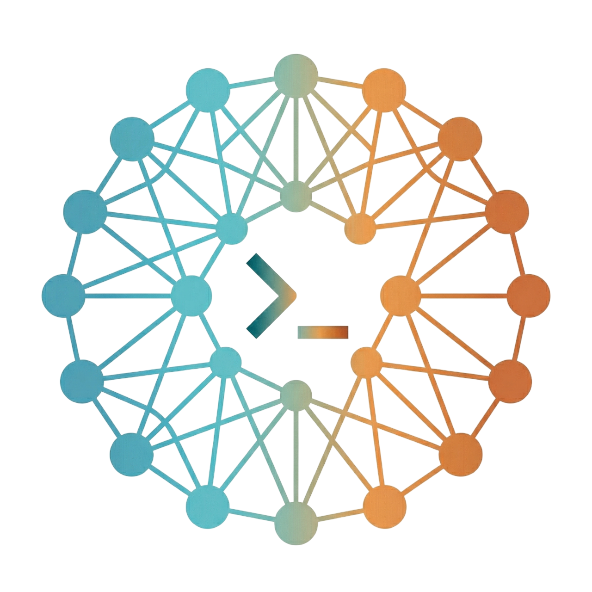

Provider CLI

Multi-session launcher per CLI AI · Claude · Codex · Gemini · Terminale
Sessioni salvate
Preset singoli
Usage CLI
Assegna un provider a ciascun client
Puoi scrivere o incollare il path, oppure scegliere la cartella da una finestra.
Launcher multi-sessione per CLI AI (Claude, Codex, Gemini, Terminale) su Windows. Basato su Electron, xterm.js e node-pty.
Se chiudi il banner home, qui puoi comunque controllare i CLI rilevati e aggiornare lo stato senza riavviare l'app.
Stato locale dei CLI richiesti da Therminal.
Configura un binario compatibile con whisper.cpp e un modello locale leggero.
Seleziona `whisper-cli.exe` e un modello `.bin`. Poi tieni premuto Shift+Alt+Z per registrare e rilascia per trascrivere nella sessione attiva.
Per velocita su CPU usa un modello tiny o base. La registrazione resta locale; la trascrizione parte solo al rilascio della shortcut.